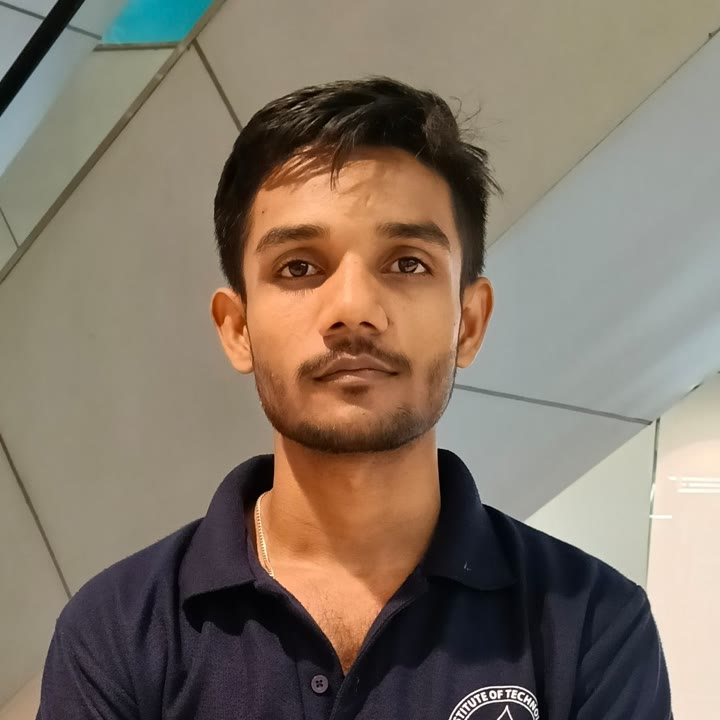
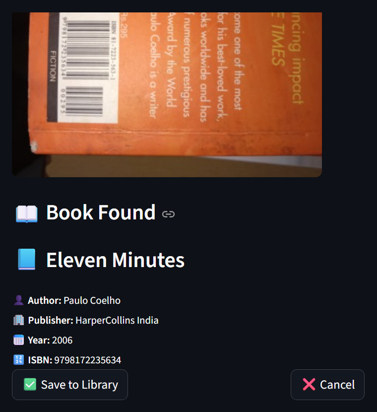
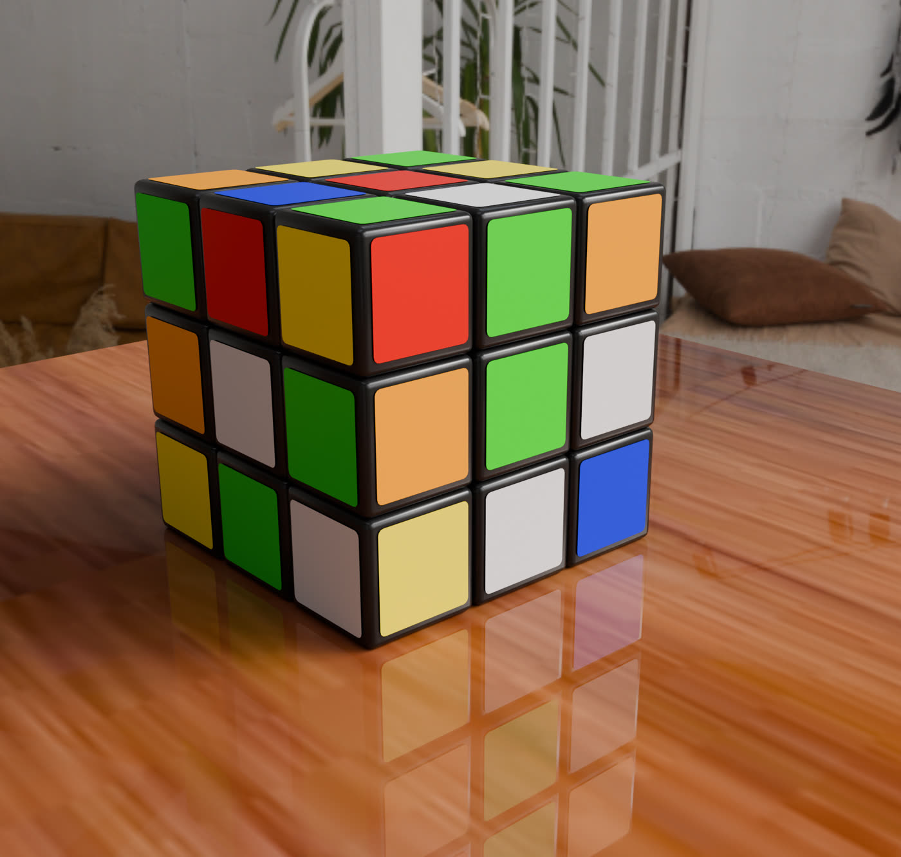

Personal site
Second-year student in the IIT Madras BS in Data Science, building toward quantitative finance. I make local AI tools, work through statistics, and read the long, difficult books.

A local AI desktop automation system that learns from how I use my computer.
Statistics and Python at IIT Madras, plus the first research papers on time series forecasting.
The Brothers Karamazov next to Myers' Psychology, one book checking the other.
A local AI pipeline that controls the desktop using Ollama, PyAutoGUI and Python. Month 1 of a 12-week plan is done. Month 2 adds background logging of my own usage, pattern detection with scikit-learn, and a live suggestion layer. Voice and gesture control come in Month 3.
Turns textbook PDFs into EPUB files with a working table of contents, so they are readable on a Kindle.
A web app for cataloguing the books I own, deployed on Streamlit Cloud.

A Monte Carlo simulation assignment, and a Statistics 2 activity built on historical NIFTY 50 data and embedded in a Google Site.
A research internship project comparing machine learning models against statistical baselines for forecasting. I chose it because it points straight at quantitative finance.
Most popular books on a topic are a diluted copy of a deeper, more rigorous book. So I go to the novels, philosophy and textbooks the popular ones are drawn from, and I read two at once when they speak to each other.
Reading Dostoevsky and a psychology textbook together is on purpose. Karamazov gives the human case, and Myers gives the research that tests it. I note where they agree and where the novel sees further.
Short notes on each book go here as I finish it.
I create 3D Ads and animation for fun. I edit videos in DaVinci Resolve and plan to record short book summaries for YouTube and Instagram, each built on a three-point outline. For the psychology textbook the plan is about one reel per ten pages, with five or six reels combined into a longer video.
